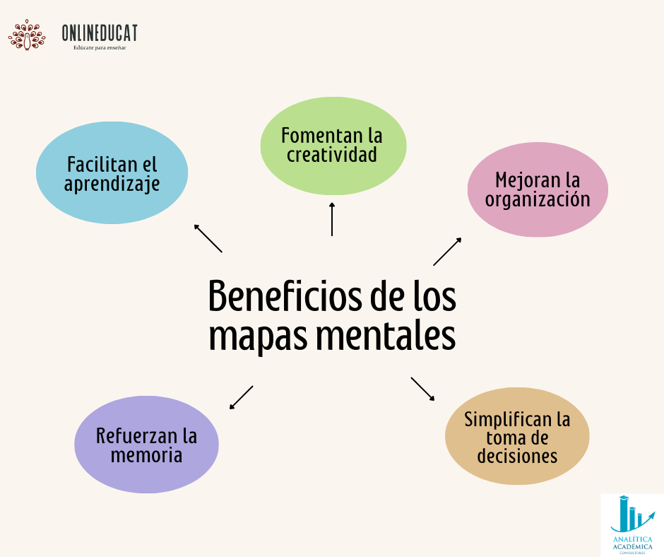

Funcion:
Representar ideas en torno a un concepto central de manera no lineal, facilitando la asociación libre de ideas y fomentando la creatividad en el proceso de aprendizaje.
Representar ideas en torno a un concepto central de manera no lineal, facilitando la asociación libre de ideas y fomentando la creatividad en el proceso de aprendizaje.
Estructura radial: Comienzan con una idea central, y a partir de ahí se extienden múltiples ramificaciones o subtemas.
Flexibilidad: Permite conexiones libres y la incorporación de imágenes o símbolos.
Creatividad: Fomenta un enfoque no lineal y permite mostrar relaciones de manera visual y espontánea.
Visualización rápida: Organizan información de manera que es fácil ver el panorama general de un tema.
En Lengua y Literatura: Son útiles para resumir temas rápidamente. Un mapa mental sobre "La Revolución Francesa" podría incluir ideas sobre sus causas, eventos principales y consecuencias, expandiéndose a medida que se desarrollan detalles.
En Ciencias Sociales: Permiten desarrollar temas complejos, como los "Derechos Humanos", conectando diferentes aspectos como la historia, la legislación y las luchas sociales.

Obra publicada con Licencia Creative Commons Reconocimiento No comercial Compartir igual 4.0